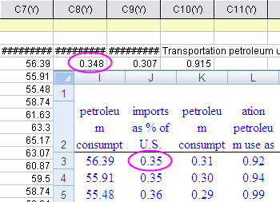

Mit Excel arbeiten
Working-with-Excel
Zusammenfassung
Origin bietet flexible Möglichkeiten, um mit Excel zu interagieren. Sie können entweder Excel-Daten in eine Origin-Arbeitsmappe importieren oder eine Excel-Mappe innerhalb von Origin öffnen. Wenn Sie einen kompletten Zugriff auf alle Zeichnungs- und Analysefunktionen von Origin brauchen, wollen Sie möglicherweise auch Ihre Excel-Datendateien in Origin importieren. Wenn es wichtig ist, eine separate Excel-Arbeitsmappe zu behalten -- damit vielleicht andere Kollegen, die nicht mit Origin arbeiten, Zugang zu dieser Datei haben -- können Sie Ihre Excel-Dateien direkt öffnen. In diesem Kapitel erhalten Sie eine kurze Einführung zum Arbeiten mit Excel.
Was Sie lernen werden
Dieses Tutorial zeigt Ihnen, wie Sie:
- Daten aus Excel mit voller Genauigkeit kopieren und einfügen,
- eine Excel-Datei in eine Origin-Arbeitsmappe importieren,
- eine Excel-Datei in Origin öffnen,
- eine Excel-Datei mit einem Pfad relativ zur Origin-Projektdatei speichern.
Daten aus Excel kopieren und einfügen
Manchmal möchten Sie vielleicht einfach Daten aus Excel kopieren und in Origin einfügen, anstatt zu importieren oder Excel zu öffnen. Die folgenden Schritte zeigen, wie ein solcher Vorgang des Kopierens und Einfügens Daten mit voller Genauigkeit einlesen kann.
- Starten Sie Excel und Origin getrennt.
- Öffnen Sie die Datei <Origin-Installationsverzeichnis>\Samples\Graphing\ExcelData.XLS in Excel.
- Markieren Sie Spalte B bis L. Klicken Sie mit der rechten Maustaste und rufen Sie den Dialog Zellen formatieren auf. Setzen Sie die Anzahl der Dezimalstellen auf 2. Jetzt zeigt Excel weniger Dezimalstellen.
- Klicken Sie auf die obere linke Zelle im Excel-Blatt, um das gesamte Blatt zu markieren, klicken Sie mit der rechten Maustaste und wählen Sie Kopieren oder verwenden Sie die Tastenkombination Strg+C zum Kopieren.
- Positionieren Sie in einer neuen Arbeitsmappe in Origin den Cursor in Zeile 1 der Spalte 1 und drücken Sie Strg+V oder klicken Sie mit der rechten Maustaste und wählen Sie Einfügen.
- Beachten Sie, dass die Zahlen mit voller Genauigkeit in Origin eingefügt werden, nicht nur die Zahlen mit den in Excel angezeigten Stellen (2). Wie im Beispiel unten gezeigt, werden die eingekreisten Zahlenwerte mit 2 Dezimalstellen in Excel (0,35) angezeigt, aber mit allen drei Dezimalstellen in Origin (0,348) importiert.
- 
- Klicken Sie in Origin mit der rechten Maustaste auf Zeile 1 des Headers und wählen Sie Als Kommentar setzen aus, um diese Zeile zu einem Origin-Spaltenkommentar zu machen.
- Klicken Sie mit der rechten Maustaste erneut auf Zeile 1 und wählen Sie die Option Als Langname setzen. Die Zeilen 1 und 2 in Excel werden dann zu dem Arbeitsblattkopf in Origin:
- Sie können doppelt auf Spalte 1 klicken, sie auf Datum setzen und dann die Daten zeichnen.
 |
In Schritt 5 können Sie mit der rechten Maustaste klicken, um Link einfügen auszuwählen. Sie können aber auch die Tastenkombination Strg+Alt+V drücken, anstatt Einfügen zu wählen, oder Sie drücken Strg+V. In der FOlge erstellen Sie eine DDE-Verknüpfung zwischen den Excel-Daten und der Origin-Arbeitsmappe. Auf diese Weise ändern sich die verknüpften Daten in der Origin-Arbeitsmappe, sobald sich die Werte in Excel verändern. Mehr hierzu erfahren Sie in diesem Blog.
|
Excel-Datei importieren
Origin unterstützt den direkten Import von Excel-Dateien in Origin-Arbeitsmappen. Es werden mehrere Blätter unterstützt. Außerdem sind Bedienelemente verfügbar, mit denen spezielle Zeilen im Excel-Blatt festgelegt werden können, die in einem Origin-Arbeitsblatt als Headerinformationen, einschließlich Langname und Kommentare, genutzt werden. Falls Sie Analyseoperationen oder Datenbearbeitung an Ihren Excel-Daten durchführen wollen, sollten Sie die Daten in Origin importieren.
- Verwenden Sie bei einer neuen aktiven Arbeitsmappe in Origin das Menü Daten: Aus Datei importieren: Excel (XLS, XLSX, XLSM)....
- Wählen Sie die Datei <Origin-Verzeichnis>\samples\graphing\Excel Data.xls und stellen Sie sicher, dass das Kontrollkästchen Optionendialog zeigen aktiviert ist.
- Lassen Sie in dem sich öffnenden Dialog das Kontrollkästchen Verwenden der Excel COM-Komponente zum Importieren aktiviert.
- Setzen Sie Index der Zeilen für Kommentare von auf 1.
- Setzen Sie Index der Zeilen für Langnamen auf 2 und klicken Sie zum Importieren auf OK.
- Klicken Sie in die Zelle Kommentare in Spalte 1, halten Sie die Strg-Taste gedrückt und ziehen Sie den unteren rechten Punkt quer über alle Spalten mit Daten. Auf diese Weise kopieren Sie die gleichen Kommentare in alle Spalten.
- Drücken Sie F4, um den Dialog Format aufzurufen, wechseln Sie zur Registerkarte Format, wählen Sie in der Auswahlliste Anwenden auf die Option Kommentare und setzen Sie Dynamisches Zusammenfassen auf Horizontal. Klicken Sie auf OK.
Auf diese Weise werden die Kommentarzellen zusammengefügt und der Titel in der Mitte aller Datenspalten gezeigt:
Excel-Dateien in Origin öffnen
Manchmal kann es praktisch sein, Daten in einer externen .xls-Datei zu speichern, aber die Datei einfach nur innerhalb von Origin als Excel-Fenster zu öffnen und dann mit den Daten zu arbeiten. Wenn Sie Excel-Dateien (.xls oder .xlsx) als Excel-Arbeitsmappen in Origin öffnen, wird eine OLE-Instanz von Microsoft Excel gestartet. Sie können direkt mit Excel-Arbeitsmappendaten zeichnen, auf viele Analysefunktionen sowie das Erstellen von 3D-Diagrammen kann dabei aber nicht zugegriffen werden.
- Wählen Sie Datei: Excel öffnen... und dann die Datei \Samples\Graphing\Excel Data.xls.
- Eine neues Excel-Fenster wird im Origin-Arbeitsbereich geöffnet. Wenn dieses Fenster aktiv ist, hat das Origin-Hauptmenü unterschiedliche Optionen, von denen manche Excel-spezifisch sind. Außerdem stehen die Excel-Symbolleisten zur Verfügung.
- Markieren Sie den Excel-Datenbereich A3:A26 und klicken Sie mit der rechten Maustaste. Wählen Sie Zellen formatieren, um sicher zu stellen, dass die Daten das Format Datum haben.
- Jetzt gehen Sie zum Menü Zeichnen in Origin und wählen Sie Mehrere Y: Doppelte Y-Achse.
- Markieren Sie A3:A26 im Excel-Blatt und klicken Sie auf X im Dialog Daten zum Zeichnen auswählen, um die X-Daten zuzuweisen.
- Markieren Sie B3:C26 im Excel-Blatt und klicken Sie auf Y im Dialog Daten zum Zeichnen auswählen, um die X-Daten zuzuweisen. Wählen Sie Mehrere Layer in der Auswahlliste Zeichnen in.
- Klicken Sie auf Zeichnen, um ein Diagramm mit doppelter Y-Achse zu erstellen:
- Standardmäßig zeigt Origin die Beschriftungen der Hilfsstriche für die Zeit (Time) auf der X-Achse im Format TT.MM.JJJJ an. Klicken Sie doppelt auf die X-Achse, um den Dialog Achsen zu öffnen. Wählen Sie das Symbol Horizontal auf der Registerkarte Skalierung und geben Sie für die Skalierung von 01.01.1970 bis 01.01.2000 ein.
Wählen Sie das Symbol Unten auf der Registerkarte Beschriftung der Hilfsstriche und ändern Sie die Anzeige auf Jahr.
Klicken Sie auf OK, um diese Einstellungen anzuwenden und den Dialog Achsen zu schließen. Das Diagramm sollte dem folgenden Bild entsprechen:
|
Nach Öffnen von Excel in Origin wird ein Symbolleisten-Platzhalter dort sichtbar, wo das Excel-Menü sich befunden hat, wenn Sie zu einem anderen Origin-Fenster wechseln. Um ihn zu entfernen, klicken Sie mit der rechten Maustaste und wählen Sie Symbolleisten-Platzhalter verbergen oder Symbolleisten-Platzhalter immer verbergen.
|
Externen Excel-Dateipfad relativ zum OPJ-Pfad festlegen
Das Origin-Projekt kann ein Excel-Fenster enthalten, das mit einer externen Excel-Datei verknüpft ist. In solch einem Fall kann es sich als nützlich erweisen, die Excel-Datei in dem gleichen Ordner wie das Origin-Projekt oder in einem Unterordner des Origin-Projektordners zu speichern. Die zwei Dateien werden übertragbarer, wie in den folgenden Schritten zu sehen:
- Schließen Sie Excel, wenn es ausgeführt wird.
- Führen Sie die Schritte im obigen Abschnitt Excel-Datei in Origin öffnen durch und erstellen Sie (optional) ein Diagramm.
- Speichern Sie das OPJ in einem Verzeichnis wie "C:\Eigene Dateien\Mein Projekt.opj".
- Klicken Sie mit der rechten Maustaste auf das Excel-Fenster und wählen Sie Arbeitsmappe speichern unter. Speichern Sie es in einem (neuen) Unterordner des OPJ-Speicherorts, wie z.B. "C:\Eigene Dateien\Daten\MeineDaten.xls".
- Klicken Sie mit der rechten Maustaste erneut auf den Titel des Excel-Fensters und wählen Sie Einstellungen. Aktivieren Sie das Kontrollkästchen Relativ zum aktuellen Projektpfad (opj). Beachten Sie, dass der Excel-Dateipfad im Feld unten zu einem relativen Pfad von "Daten\MeineDaten.xls" geändert wird.
- Speichern Sie das OPJ erneut. Sie können jetzt die gesamte Unterordnerstruktur kopieren, angefangen beim Speicherort des OPJ, und sie auf einen externen Speicher (d.h. einen Memory Stick oder Ähnliches) übertragen oder die gesamte Ordnerstruktur zippen. Wenn sie auf einem anderen Computer geöffnet wird, sucht Origin die Excel-Datei relativ zu dem OPJ-Pfad.
|
Befindet sich Ihre Excel-Datei an einem anderen Speicherort und Sie möchten sie aber im gleichen Pfad speichern wie das OPJ, können Sie die Excel-Datei in Origin öffnen, dann mit der rechten Maustaste auf den Titel klicken, Eigenschaften auswählen und auf die Schaltfläche Beim Speichern zum OPJ-Pfad wechseln klicken. Beim Speichern der OPJ-Datei wird die Excel-Datei von ihrem aktuellen Speicherort aus in den gleichen Pfad kopiert, in dem auch das OPJ gespeichert ist.
|